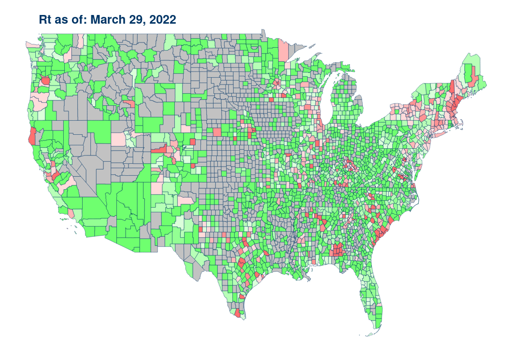

Explore county-level statistics by choosing a state.
*Please note the dashboard is best explored using a larger screen than currently set
{% include bokeh_viz/choropleth_covid_explorer_tags.html %}

{% include bokeh_viz/choropleth_county_cust_wrap.html %}